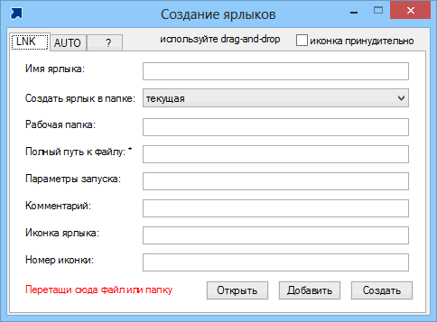
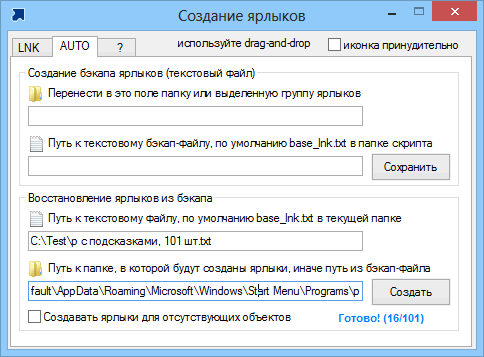
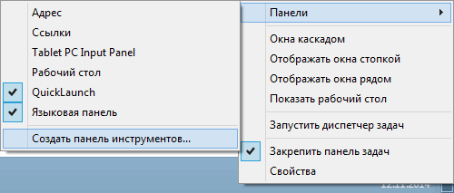
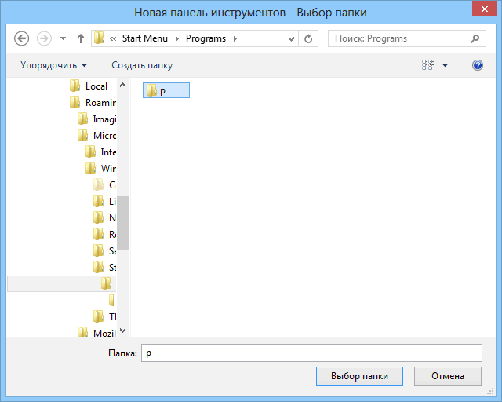
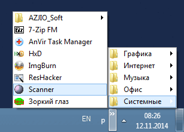

create_lnk
Назначение
Создание ярлыков.


Создание раскрывающегося списка ярлыков после использования create_lnk.



Возможности
- Создаёт ярлык для несуществующего объектов.
- Создаёт базу ярлыков в виде текстового файла для возможности восстановления
- Командная строка для создания / восстановления ярлыков из базы
- Кроме этого имея базу ярлыков в текстовом виде можно выполнить замену путей переменными и любые другие текстовые операции.
Параметры ком. строки
/f"Path" - путь к файлу базы
/p"Path" - путь к папке ярлыков
Эти параметры необязательные. Если отсутствует база, то используется файл base_lnk.txt в текущей папке. Если отсутствует путь к папке ярлыков, то он используется из файла базы. Если отсутствуют необходимые файл базы или путь для ярлыков неправильный, то ярлыки не создадутся. Если объект запуска, на который ссылается ярлык отсутствует, то ярлык не создаётся.
Один из способов использования программы:
- Создайте ярлыки для известных программ.
- Сортируйте ярлыки по категориям, например "Системные", "Интернет"
- Сделайте резервирование ярлыков в файл-базу
- Создайте для ярлыков качественное описание назначения программы (можно это сделать на этапе 2 или в базе)
- Теперь используя файл-базу вы всегда сможете создать удобное меню с категориями, ярлыки будут созданы только для существующих программ. Папку ярлыков можно переместить на панель задач возле трея и получится удобное меню.
В базе ярлыков вы можете оставлять пустые или закомментированные строки (точка с запятой). Таким образом можно добавлять описания к группе ярлыков.